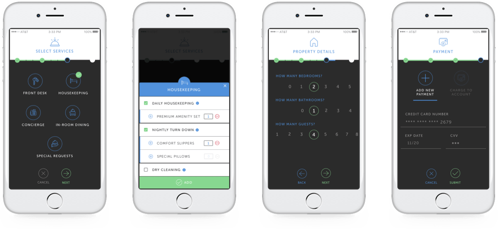

UpStay is a mobile application designed to facilitate the booking and payment process of on-demand hotel services. Designed for the end user, UpStay is purposed for the user who books alternative accommodation on any platform (such as AirBnb, VRBO, etc.) yet wants to have the services that are found in a hotel. Partnering with service providers to execute, UpStay is the platform for users to experience hotel luxuries while experiencing a new place like a “local.”
As the Lead Experience Designer for UpStay, my responsibility spanned the entire scope of the design cycle, from concept to prototype. I set out to improve visibility and facilitate a seamless process for the user to engage with booking and enjoying on-demand services in a new realm. I managed the project planning and enforced staying on track to deliver MVP on-time, on-budget.
We decided to focus our efforts on the mobile experience initially resulting from discussions with key stakeholders. This included input from operations and marketing to ensure features were realistic to deliver within our time frame. Additionally, product management was involved to ensure the features met strategic business goals. I began exploring rough concepts for the mobile layout, which proved useful as discussion points for defining more specific details.
To design a mobile app for a hotel guest services company that allows guests of vacation rentals/AirBnb properties to book on-demand concierge services with the push of a button in a mobile application as if they were dialing ‘0’ on the hotel in-room phone.

The initial objective of the user research was to determine what the pain points are for vacation goers that booked rentals instead of hotel stays. There is a big gap here and usually you either get a great service product with no tech support nor seamless booking process. Or, on the other hand, an on-demand app that delivers a less than premium product that is not what users are looking for.
Through the extensive user research utilizing surveys and interviews combined with lo-fi prototypes, a number of patterns and user insights were uncovered that shaped the direction of the design of UpStay. The research was initially focused on consumers as well as real estate owners (who typically act as the hosts on these platforms). However, very early on in the research, it was clear that the market was large enough to demand a separate application direct to consumer.
We proceeded with focusing exclusively on users who have previously booked an AirBnb (or other) and also have experienced a 5-star hotel. From that segment, we uncovered user motivations regarding the services that are most widely used at hotels and drew conclusions from this data about relevant services in alternative accommodations. This proved to be a valuable exercise and expanded the product scope to include all relevant services, a frictionless booking process, and a simple payment solution.
Through the surveys and interviews, I uncovered a number of patterns and user insights that shaped the direction of the design of SommMe:
With user research insights in mind, I created a flow chart to visualize the interactions and touchpoints where a user would expect to input versus information be provided or assumed (such as pre-set preferences). This allowed users to see snippets of high-level stats in their normal usage of the app, with CTA’s to dive into more in depth analytics. I also introduced ways of strengthening the relationship between broadcaster and audience, by providing opportunities to personally thank and ‘follow back’ fans at the end of a broadcast.
Using the user flows to direct the wireframing, I proceeded to sketch concepts to address user onboarding, SMS verification, zip code confirmation (property address and access information), account overview and service selection as seen in the screen shots below.
Through this stage of focusing on the information architecture, there were a number of iterations that resulted from wireframing and rapid prototyping. At this point, the focus of the design was on the service selection as this is the main pain point for the user.
Having defined the user flows and structure of the product, there was still debate around exactly which insights to include. The features we prioritized needed to consider our capabilities as well as integrations to other service provider platforms to execute the physical service. To ensure we were taking the right steps and building a product that users need, we determined to design an MVP focused on the service selection to gather further insights and iterate based on these conclusions as this is the main pain point for the user.
The MVP was positively received by user group we tested with the clickable prototype and will be rolled out to service partners in phase two. The ease of the booking process had a positive effect in user engagement and retention. In terms of next steps, expansion is dependent on data and development resources, with the aim to: